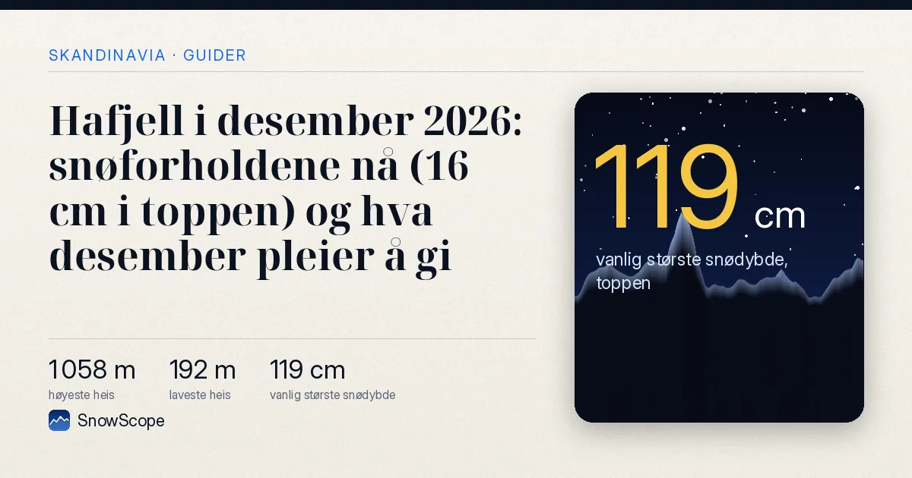

Hafjell i desember 2026: snøforholdene nå (16 cm i toppen) og hva desember pleier å gi
Hafjell har 16 cm snø i toppen fredag 27. november, og bare litt mer på vei: rundt 4 cm søndag. Det er tynt for årstiden. På 625 m er snødybden 8 cm, mens 36 cm er normalt i slutten av november. Starten på sesongen hviler derfor på kunstsnø.
Se snøprognosen for Hafjell direkte i SnowScope-appenSnødybde, puddervarsler og 3D-kartet, gratis.
Hvordan er forholdene akkurat nå?
Det har vært tørt og kaldt de siste dagene: ingen nysnø på tre dager og ingen på sju. Helgen gir 5 cm til sammen, mandag 1 cm. Kulda er likevel god nytt: den holder på snøen som ligger og gir anlegget gode forhold for snøproduksjon i nedre del av bakkene.
Hafjell går fra 192 m ved Øyer til 1 058 m. Den store høydeforskjellen er en fordel midtvinters, men betyr at nedre del alltid får snø sist.
Hvor mye snø pleier det å være?
På 625 m er normal snødybde 45 cm 8. desember, 50 cm 15. desember og 56 cm første juledag. I 76 % av 46 vintre lå det mer enn 50 cm 1. januar.
Den mest snørike vinteren i historikken var 1987-88, med 159 cm på det meste; den magreste 1995-96, med 73 cm. Normalt er snøen dypest i mars, rundt 91 cm.
Hva med Kvitfjell?
Naboen Kvitfjell, en halvtime lenger nord i Gudbrandsdalen, har 8 cm i toppen nå. Begge anleggene ligger i samme snøskygge øst for vannskillet, der vestavêret har mistet mye av fuktigheten før det kommer fram. Derfor ligger de ofte bak Vestlandet i starten av vinteren, men holder på snøen bedre når den først har kommet.
Når kommer snøen?
Ingen kan si nøyaktig når neste store snøfall kommer, men mønsteret i desember er kjent: snøen kommer med lavtrykk fra sørvest eller med kald luft fra nord, og en enkelt uke kan gi mer enn hele november.
De neste sju dagene ser rolige ut, med rundt 6 cm i toppen. Følg utviklingen daglig på snøsiden for Hafjell.
Vanlige spørsmål om Hafjell
Er alle bakkene åpne nå? Nei. I starten av sesongen åpner anlegget de bakkene som har nok kunstsnø, som regel fra toppen og ned mot hovedheisene. Resten avhenger av naturlig snø.
Er det kaldt nok til snøproduksjon? Ja, de neste dagene ser kalde ut. Det er den viktigste nyheten for Hafjell akkurat nå: med flere minusgrader kan snøkanonene gå hele natten.
Hvordan står Hafjell seg mot normalen i juleferien? Med den tynne starten ligger anlegget bak, men historikken viser at det sjelden mangler snø helt i jula: snø på bakken første juledag på 625 m har vi sett i 100 % av vintrene.
Hafjell og Lillehammer-regionen
Hafjell ligger rett nord for Lillehammer, med Øyer som nærmeste sentrum. Sammen med Kvitfjell, Skeikampen og Sjusjøen utgjør området et av de største vintermålene på Østlandet, og avstanden fra Oslo er rundt to og en halv time med bil eller tog.
Regionen har et kontinentalt preg: kaldere og tørrere enn Vestlandet, med mindre snø men ofte bedre snøkvalitet. Når snøen først er der, ligger den lenge, og mars er ofte den beste måneden i Hafjell.
I år er avstanden til normalen stor: 8 cm på 625 m mot normale 36 cm. Det er altså ikke snøkvaliteten, men mengden som mangler før desember.
Jul i Hafjell
Juleuka er en av de travleste i Hafjell, med mange hytter i Hafjell Alpinlandsby og på Øyer. Med kunstsnø i hovedtraseene er anlegget nesten alltid åpent i jula; det er de naturlige løypene, skogsløypene og langrennsløypene som avhenger av desembersnøen.
For langrenn er Hafjell og Lillehammer-fjellet ofte gode tidlig, fordi løypene ligger høyere enn alpinbakkenes nedre del.
Tips til skiløpere
- Nå: kjør de øvre bakkene og ta heisen ned hvis nederste del er tynn.
- Planlegg langrenn i høyfjellet over Hafjell, der snøen kommer først.
- Sjekk åpne bakker og løyper hos anlegget før du kjører.
- Tog til Hafjell via Lillehammer er et godt alternativ til bil i juleferien.
- Les mer i guiden snø i Hafjell måned for måned og på Oslo-siden.
Om tallene
Snøtall: SnowScopes snøkart og prognose for i dag og vår historikk over 46 tidligere vintre for hvert skisenter (et anslag for området, ikke skisenterets egen rapport).
Offisielle snøskredvarsler: Varsom (NVE)
Siter denne rapporten
For forskning, undervisning eller presse: tallene og diagrammene kan brukes fritt under CC BY 4.0 med denne kildehenvisningen.
SnowScope (2026), Hafjell i desember 2026: snøforholdene nå (16 cm i toppen) og hva desember pleier å gi, https://snowscope.app/blog/nb/2026/11/hafjell-desember-2026-snoforhold-og-nar-kommer-snoen.html, hentet 2026-11-27
SnowScope (Atlas Labs). (2026, November 27). Hafjell i desember 2026: snøforholdene nå (16 cm i toppen) og hva desember pleier å gi. SnowScope snow reports. https://snowscope.app/blog/nb/2026/11/hafjell-desember-2026-snoforhold-og-nar-kommer-snoen.html
BibTeX
@misc{snowscope2026hafjelldesember2026snofo,
author = {{SnowScope (Atlas Labs)}},
title = {Hafjell i desember 2026: snøforholdene nå (16 cm i toppen) og hva desember pleier å gi},
year = {2026},
month = nov,
howpublished = {\url{https://snowscope.app/blog/nb/2026/11/hafjell-desember-2026-snoforhold-og-nar-kommer-snoen.html}},
note = {Published 2026-11-27 18:02 UTC; accessed 2026-11-27}
}· CC BY 4.0 · Metoder, data og verktøy →
Hafjell: snø og temperatur etter høyde, i vinter sammenlignet med i fjor (verktøy) →
Følg Hafjell
Gratis: en melding når nysnø er på vei, og prognosen hver morgen.